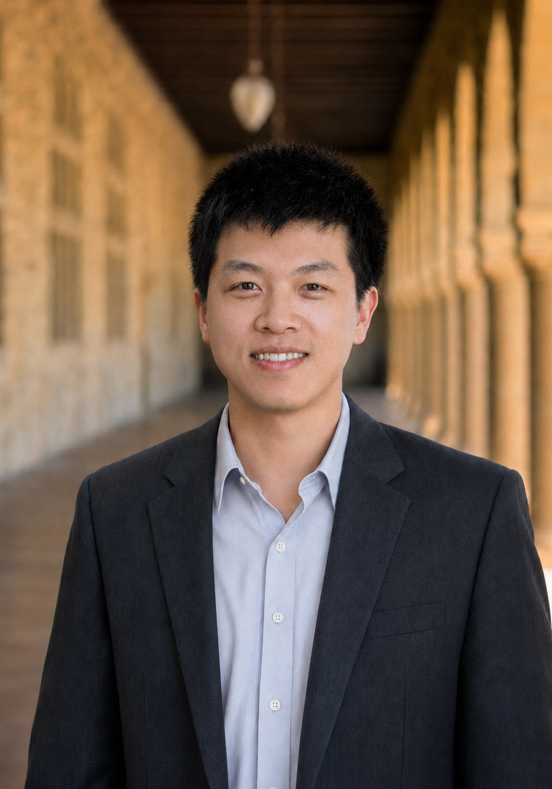

Associate Professor (Tenure-Track)
School of Electrical Engineering, Shanghai Jiao Tong University
Room 1-347, SEIEE Building, 800 Dongchuan Road, Shanghai, China
Email: luke18 [at] sjtu.edu.cn

I am an Associate Professor (Tenure-Track) in the School of Electrical Engineering at Shanghai Jiao Tong University (SJTU). Before joining SJTU, I was a Postdoctoral Scholar in the Department of Civil and Environmental Engineering at Stanford University and a Stanford Impact Labs Postdoctoral Fellow, working in the Stanford Sustainable Systems Lab. I received my Ph.D. in Civil and Environmental Engineering (Atmosphere/Energy) from Stanford University in 2025, advised by Prof. Ram Rajagopal and Prof. Arun Majumdar, and my master and bachelor degrees in Electrical Engineering from SJTU in 2018 and 2015, respectively.
My research focuses on:
Students at all levels (undergraduate and graduate) who are interested in working with me, please feel free to email me.
For the complete list, please see Google Scholar.